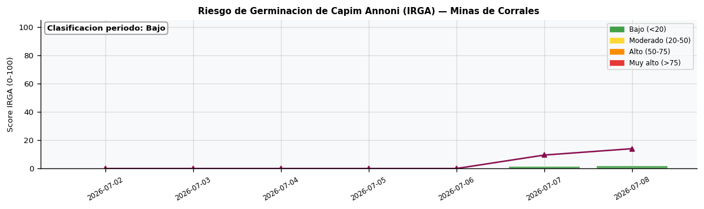
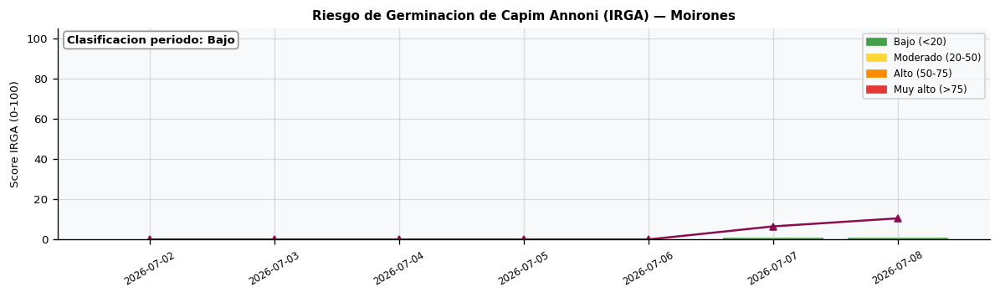
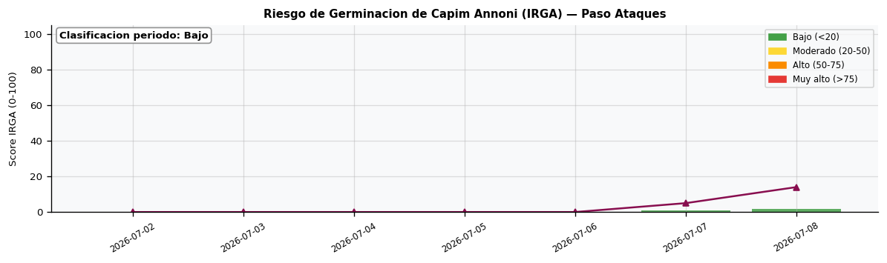
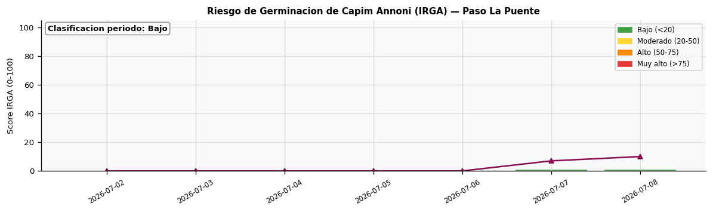
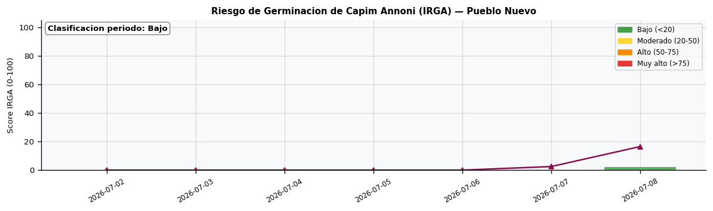
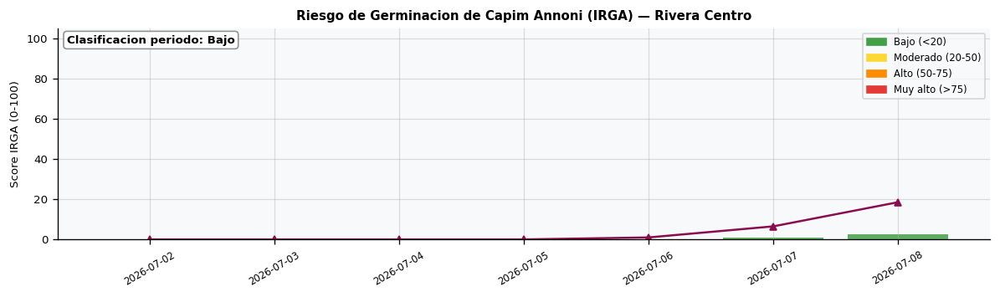
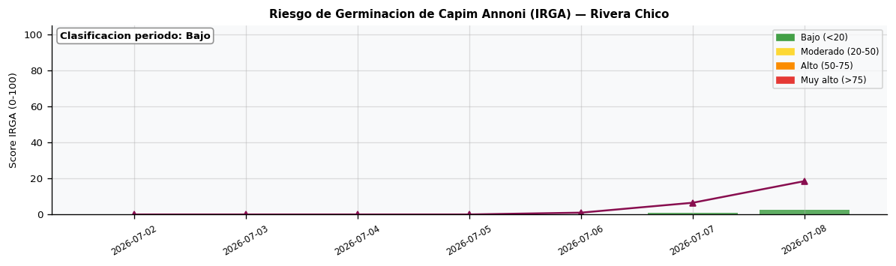
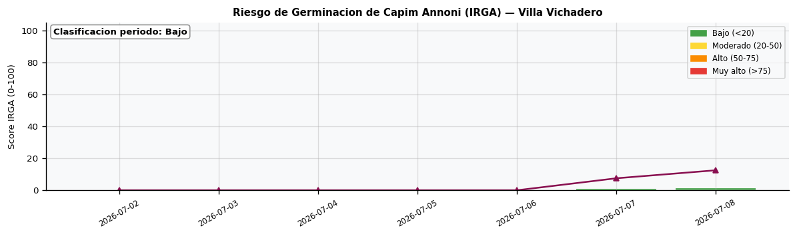

Departamento de Rivera · 2026-07-02
HERRAMIENTA DE APOYO: No reemplaza el asesoramiento tecnico ni el protocolo oficial Plan Agropecuario/INIA/IPA. El Capim Annoni (Eragrostis plana Nees) es una graminea invasora oriunda de Sudafrica que ingreso al Uruguay por la frontera con Brasil. Produce hasta 100.000 semillas por planta con viabilidad de 10 anos. Este indice evalua condiciones termicas e hidrologicas favorables para la germinacion: temperatura de suelo > 15 C con humedad disponible. Ventana principal: setiembre-noviembre.
Interpretacion: < 20: Bajo | 20-50: Moderado - monitorear focos | 50-75: Alto - condiciones favorables | > 75: Muy alto







